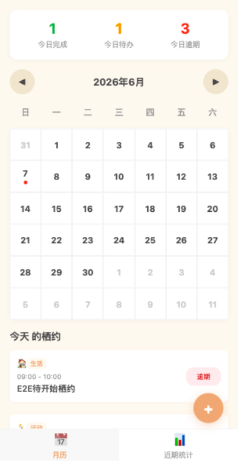

核心功能 01
栖约打卡系统
用户通过「栖约」管理日常自律任务，支持手动添加与 AI 自然语言添加。系统自动流转 pending → in_progress → completed / overdue 状态。
- 完成栖约：+2 栖行值，触发勋章检查
- 逾期处理：超时自动标记，-5 栖行值
- 补打卡：逾期 3 天内可补，每月限 5 次，需上传证明
- 月历视图：按日期打点，支持今日/近期统计与热力图
- AI 添加：分层智能解析架构，支持上下文记忆
